8 Lineare Modelle
8.1 Lernsteuerung
8.1.1 Position im Modulverlauf
Abbildung 1.1 gibt einen Überblick zum aktuellen Standort im Modulverlauf.
8.1.2 Lernziele
Nach Absolvieren des jeweiligen Kapitels sollen folgende Lernziele erreicht sein.
Sie können …
- die Post-Verteilung für einfache lineare Modelle in R berechnen
- zentrale Informationen zu Modellparametern - wie Lage- oder Streuungsmaße und auch Schätzintervalle - aus der Post-Verteilung herauslesen
- künftige, laut Modell zu erwartende Beobachtungen mit der PPV simulieren
8.1.3 Vorbereitung im Eigenstudium
8.1.4 Benötigte R-Pakete
In diesem Kapitel benötigen Sie folgende R-Pakete.
Da wir in diesem Kapitel immer mal wieder eine Funktion aus dem R-Paket easystats verwenden: Hier finden Sie eine Übersicht aller Funktionen des Pakets.1
8.1.5 Begleitvideso
8.2 Post-Verteilung der Regression
8.2.1 Einfache Regression
Die (einfache) Regression prüft, inwieweit zwei Variablen, \(Y\) und \(X\) linear zusammenhängen. Je mehr sie zusammenhängen, desto besser kann man \(X\) nutzen, um \(Y\) vorherzusagen (und umgekehrt). Hängen \(X\) und \(Y\) zusammen, heißt das nicht (unbedingt), dass es einen kausalen Zusammenhang zwischen \(X\) und \(Y\) gibt. Linear ist ein Zusammenhang, wenn der Zuwachs in \(Y\) relativ zu \(X\) konstant ist: wenn \(X\) um eine Einheit steigt, steigt \(Y\) immer um \(b\) Einheiten (nicht kausal, sondern deskriptiv gemeint).
Datenquelle, McElreath (2020).
Laden wir die !Kung-Daten und visualisieren wir uns den Zusammenhang zwischen Gewicht (X) und Größe (Y), Abbildung 8.1.
Kung_path <- "https://raw.githubusercontent.com/sebastiansauer/Lehre/main/data/Howell1a.csv"
d <- read_csv(Kung_path)
d2 <-
d %>%
filter(age > 18)
d2 %>%
ggplot(
aes(x = weight, y = height)) +
geom_point(alpha = .7) +
geom_smooth(method = "lm")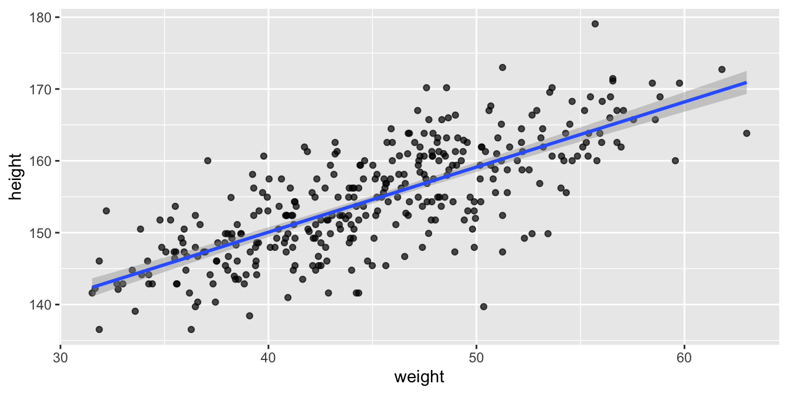
8.2.2 Bei jedem Prädiktorwert eine Post-Verteilung für \(\mu\)
Komfort pur: Unser Modell erlaubt uns für jeden beliebigen Wert des Prädiktors eine Post-Verteilung (von \(\mu\)) zu berechnen.
Hier am Beispiel von m42, s. Abbildung 8.2.
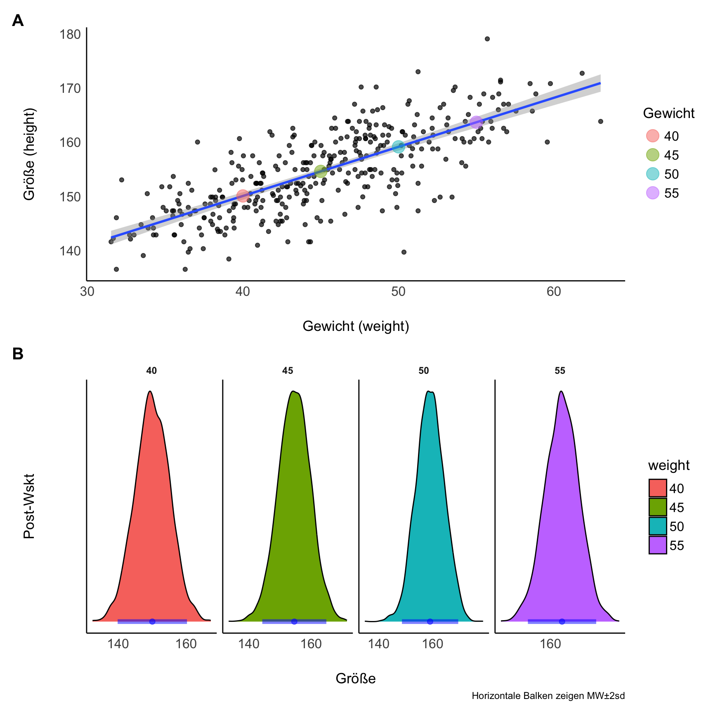
8.2.3 Statistiken zum !Kung-Datensatz
Tabelle 8.1 zeigt die zentralen deskriptiven Statistiken zum !Kung-Datensatz.
Kung_path <- "https://raw.githubusercontent.com/sebastiansauer/Lehre/main/data/Howell1a.csv"
d <- read_csv(Kung_path)
d2 <- d %>% filter(age > 18)
describe_distribution(d2)| Variable | Mean | SD | IQR | Min | Max | Skewness | Kurtosis | n | n_Missing |
|---|---|---|---|---|---|---|---|---|---|
| height | 154.6443688 | 7.7735641 | 12.065000 | 136.52500 | 179.07000 | 0.1434736 | -0.4973852 | 346 | 0 |
| weight | 45.0455429 | 6.4552197 | 9.135626 | 31.52464 | 62.99259 | 0.1398158 | -0.5317283 | 346 | 0 |
| age | 41.5397399 | 15.8093044 | 22.000000 | 19.00000 | 88.00000 | 0.6758624 | -0.2014534 | 346 | 0 |
| male | 0.4739884 | 0.5000461 | 1.000000 | 0.00000 | 1.00000 | 0.1046415 | -2.0006483 | 346 | 0 |
| Variable | Mean | SD | IQR | Range | Skewness | Kurtosis | n | n_Missing |
|---|---|---|---|---|---|---|---|---|
| height | 154.64 | 7.77 | 12.06 | (136.53, 179.07) | 0.14 | -0.50 | 346 | 0 |
| weight | 45.05 | 6.46 | 9.14 | (31.52, 62.99) | 0.14 | -0.53 | 346 | 0 |
| age | 41.54 | 15.81 | 22.00 | (19.00, 88.00) | 0.68 | -0.20 | 346 | 0 |
| male | 0.47 | 0.50 | 1.00 | (0.00, 1.00) | 0.10 | -2.00 | 346 | 0 |
Wie aus Tabelle 8.1 abzulesen ist, beträgt das mittlere Körpergewicht (weight) liegt ca. 45kg (sd 7 kg).
8.2.4 Etwas mehr EDA
Wir brauchen die EDA hier nicht wirklich, aber es ist praktisch. Das Paket DataExplorer hat ein paar nette Hilfen zur explorativen Datenanalyse.
8.2.4.1 Gibt es fehlende Werte?
Nein, s. Abb. Abbildung 8.3.
d2 %>% plot_missing()
8.2.4.2 Verteilung der numerischen Variablen
Betrachten wir die Verteilung der numerischen Variablen des Datensatzes, s. Abbildung 8.4.
d2 %>% plot_histogram()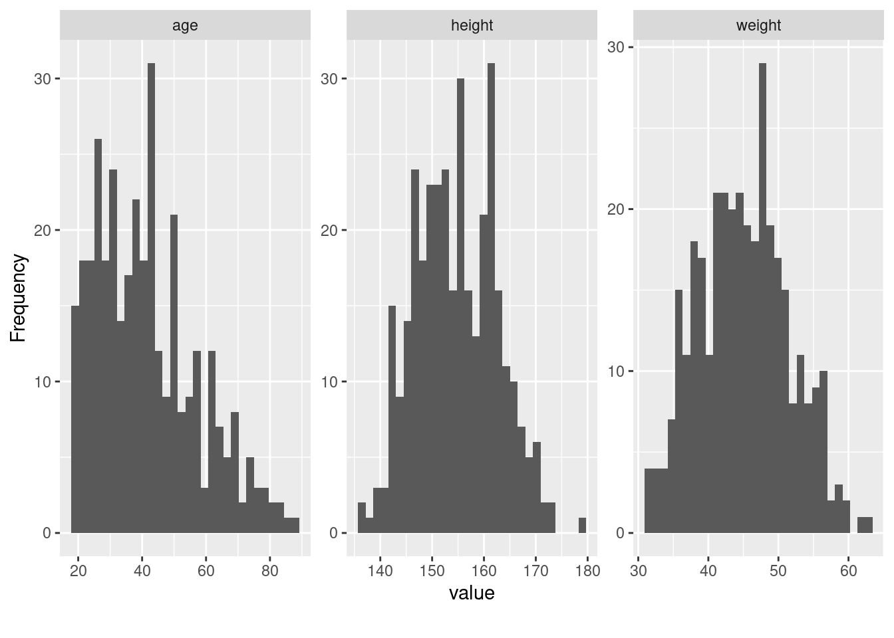
8.2.4.3 Verteilung der kategorialen Variablen
Betrachten wir die Verteilung der kategorialen Variablen des Datensatzes, s. Abbildung 8.5.
8.2.4.4 Korrelationen
Die Korrelationen der (numerischen) Variablen sind in Abbildung 8.6 dargestellt.
d2 %>% plot_correlation()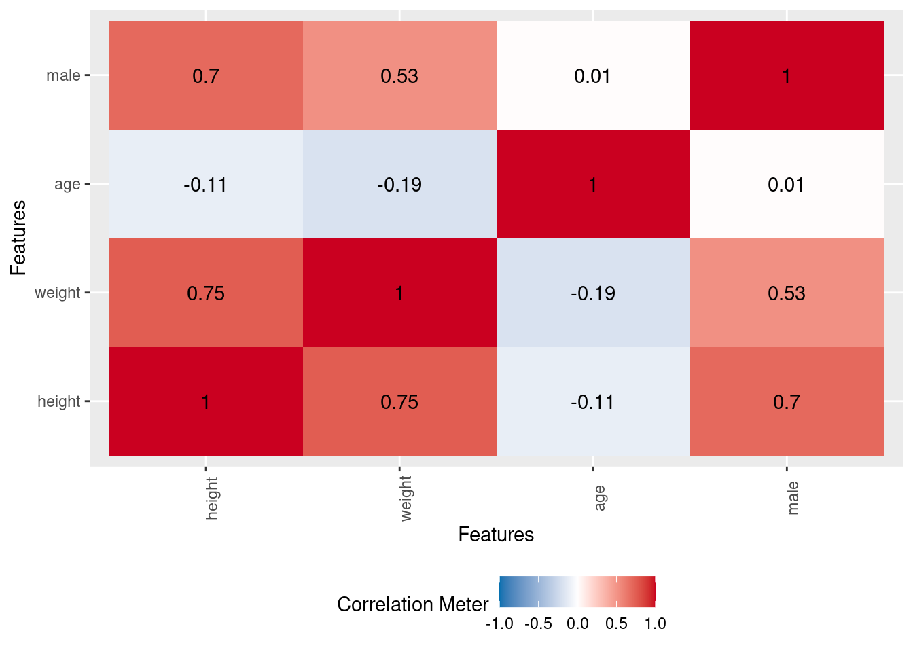
8.2.4.5 Bonus
Probieren Sie mal die folgende Funktion aus, die Ihnen einen Bericht zur EDA erstellt: create_report(d2).
8.2.5 Prädiktor zentrieren
Zieht man von jedem Gewichtswert den Mittelwert ab, so bekommt man die Abweichung des Gewichts vom Mittelwert (Prädiktor “zentrieren”, engl. to center). Wenn man den Prädiktor (weight) zentriert hat, ist der Achsenabschnitt, \(\alpha\), einfacher zu verstehen. In einem Modell mit zentriertem Prädiktor (weight) gibt der Achsenabschnitt die Größe einer Person mit durchschnittlichem Gewicht an. Würde man weight nicht zentrieren, gibt der Achsenabschnitt die Größe einer Person mit weight=0 an, was nicht wirklich sinnvoll zu interpretieren ist.
Vgl. Gelman, Hill, und Vehtari (2021), Kap. 10.4, 12.2.
So kann man das Zentrieren bewerkstelligen (mit Hilfe von center aus easystats):
d3 <-
d2 %>%
mutate(weight_c = as.numeric(center(weight)))Oder so, von Hand:
| height | weight | age | male | weight_c |
|---|---|---|---|---|
| 152 | 48 | 63 | 1 | 3 |
| 140 | 36 | 63 | 0 | −9 |
| 137 | 32 | 65 | 0 | −13 |
Wie man sieht, ist die Verteilung “zur Seite geschoben”: Der Mittelwert liegt jetzt eben bei 0, s. Abbildung 8.7.
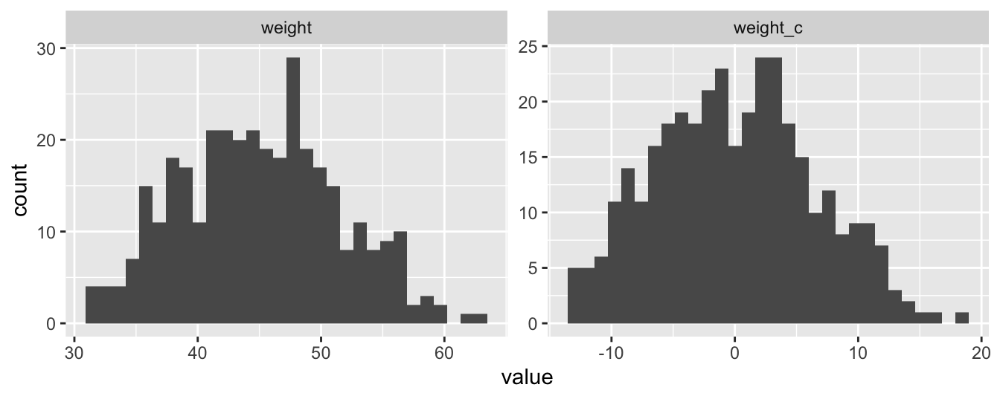
Das schwierigste ist dabei, nicht zu vergessen, dass d3 die Tabelle mit zentriertem Prädiktor ist, nicht d2.
8.3 Modell m43: zentrierter Prädiktor
Einige Regressionskoeffizienten, wie der Achsenabschnitt (Intercept) sind schwer zu interpretieren: Bei einem (erwachsenen) Menschen mit Gewicht 0, was wäre wohl die Körpergröße? Hm, Philosophie steht heute nicht auf der Tagesordnung.
Da wäre es schön, wenn wir die Daten so umformen könnten, dass der Achsenabschnitt eine sinnvolle Aussage macht. Zum Glück geht das leicht: Wir zentrieren den Prädiktor (Gewicht)!
Durch Zentrieren kann man die Ergebnisse einer Regression einfacher interpretieren.
8.3.1 Modelldefinition von m43
Für jede Ausprägung des Prädiktors (weight_centered), \(wc_i\), wird eine Post-Verteilung für die abhängige Variable (height, \(h_i\)) berechnet. Der Mittelwert \(\mu\) für jede Post-Verteilung ergibt sich aus dem linearen Modell (unserer Regressionsformel). Die Post-Verteilung berechnet sich auf Basis der Priori-Werte und des Likelihood (Bayes-Formel). Wir brauchen Priori-Werte für die Steigung \(\beta\) und den Achsenabschnitt \(\alpha\) der Regressionsgeraden. Außerdem brauchen wir einen Priori-Wert, der die Streuung \(\sigma\) der Größe (height) angibt; dieser Wert wird als exonentialverteilt angenommen. Der Likelihood gibt an, wie wahrscheinlich ein Wert height ist, gegeben \(\mu\) und \(\sigma\).
\[\begin{align*} \color{red}{\text{height}_i} & \color{red}\sim \color{red}{\operatorname{Normal}(\mu_i, \sigma)} && \color{red}{\text{Likelihood}} \\ \color{green}{\mu_i} & \color{green}= \color{green}{\alpha + \beta\cdot \text{weightcentered}_i} && \color{green}{\text{Lineares Modell} } \\ \color{blue}\alpha & \color{blue}\sim \color{blue}{\operatorname{Normal}(178, 20)} && \color{blue}{\text{Priori}} \\ \color{blue}\beta & \color{blue}\sim \color{blue}{\operatorname{Normal}(0, 10)} && \color{blue}{\text{Priori}}\\ \color{blue}\sigma & \color{blue}\sim \color{blue}{\operatorname{Exp}(0.1)} && \color{blue}{\text{Priori}} \end{align*}\]
Der Achsenabschnit (engl. intercept) eines Regressionsmodell wird in der Literatur oft mit \(\beta_0\) bezeichnet, aber manchmal auch mit \(\alpha\). Und manchmal mit noch anderen Buchstaben, das Alphabet ist weit. 🤷
8.3.2 Likelihood, m43
\[ \begin{aligned} \color{red}{\text{height}_i} & \color{red}\sim \color{red}{\operatorname{Normal}(\mu_i, \sigma)} && \color{red}{\text{Likelihood}} \end{aligned} \]
Der Likelihood von m43 ist ähnlich zu den vorherigen Modellen (m41, m42). Nur gibt es jetzt ein kleines “Index-i” am \(\mu\) und am \(h\) (h wie heights). Es gibt jetzt nicht mehr nur einen Mittelwert \(\mu\), sondern für jede Beobachtung (Zeile) einen Mittelwert \(\mu_i\). Lies etwa so:
“Die Wahrscheinlichkeit, eine bestimmte Größe bei Person \(i\) zu beobachten, gegeben \(\mu\) und \(\sigma\) ist normalverteilt (mit Mittelwert \(\mu\) und Streuung \(\sigma\))”.
8.3.3 Regressionsformel, m43
\[ \begin{aligned} \color{green}{\mu_i} & \color{green}= \color{green}{\alpha + \beta\cdot \text{weight}_i} && \color{green}{\text{Lineares Modell} } \\ \end{aligned} \]
\(\mu\) ist jetzt nicht mehr ein Parameter, der (stochastisch) geschätzt werden muss. \(\mu\) wird jetzt (deterministisch) berechnet. Gegeben \(\alpha\) und \(\beta\) ist \(\mu\) ohne Ungewissheit bekannt. \(\text{weight}_i\) ist der Prädiktorwert (weight) der \(i\)ten Beobachtung, also einer !Kung-Person (Zeile \(i\) im Datensatz). Lies etwa so:
“Der Mittelwert \(\mu_i\) der \(i\)ten Person berechnet sich als Summe von \(\alpha\) und \(\beta\) mal \(\text{weight}_i\)”.
\(\mu_i\) ist eine lineare Funktion von weight. \(\beta\) gibt den Unterschied in height zweier Beobachtung an, die sich um eine Einheit in weight unterscheiden (Steigung der Regressionsgeraden). \(\alpha\) gibt an, wie groß \(\mu\) ist, wenn weight Null ist (Achsenabschnitt, engl. intercept).
8.3.4 Priori-Werte des Modells m43
\[\begin{align*} \color{blue}\alpha & \color{blue}\sim \color{blue}{\operatorname{Normal}(178, 20)} && \color{blue}{\text{Priori Achsenabschnitt}} \\ \color{blue}\beta & \color{blue}\sim \color{blue}{\operatorname{Normal}(0, 10)} && \color{blue}{\text{Priori Regressionsgewicht}}\\ \color{blue}\sigma & \color{blue}\sim \color{blue}{\operatorname{Exp}(0.1)} && \color{blue}{\text{Priori Sigma}} \end{align*}\]
- Parameter sind hypothetische Kreaturen: Man kann sie nicht beobachten, sie existieren nicht wirklich. Ihre Verteilungen nennt man Priori-Verteilungen.
-
\(\alpha\) wurde in
m41als \(\mu\) bezeichnet, da wir dort eine “Regression ohne Prädiktoren” berechnet haben. - \(\sigma\) ist uns schon als Parameter bekannt und behält seine Bedeutung aus dem letzten Kapitel.
- Da
heightnicht zentriert ist, der Mittelwert von \(\alpha\) bei 178 und nicht 0. - \(\beta\) fasst unser Vorwissen, ob und wie sehr der Zusammenhang zwischen Gewicht und Größe positiv (gleichsinnig) ist.
8.4 Vertiefung: Prior-Prädiktiv-Verteilung
🏎️ VERTIEFUNG, nicht prüfungsrelevant 🏎️
8.4.1 Moment
🤔 Moment. Dieser Prior, \(\beta\) in m43 erachtet positive und negative Zusammenhang als gleich wahrscheinlich?!
Sind wir wirklich indifferent, ob der Zusammenhang von Gewicht und Größe positiv oder negativ ist? Nein, sind wir nicht.
{kind=link}
8.4.2 Priori-Prädiktiv-Verteilung für m43
Was denkt wir bzw. unser Golem apriori über den Zusammenhang von Größe und Gewicht? Um diese Frage zu beantworten ziehen wir Stichproben aus den Priori-Verteilungen des Modells, also für \(\alpha\), \(\beta\) und \(\sigma\).
{kind=link}
m43_prior_pred <-
stan_glm(height ~ weight_c,
prior = normal(0, 10),
prior_intercept = normal(178, 20), # mu
prior_aux = exponential(0.1), # sigma
refresh = FALSE,
prior_PD = TRUE, # Schalter für Prior-Pred-Verteilung
data = d3)
m43_prior_pred_draws <-
m43_prior_pred %>%
as_tibble() %>%
rename(a = `(Intercept)`,
b = weight_c) %>%
slice_sample(n = 50)| a | b | sigma |
|---|---|---|
| 225.2 | 0.8 | 0.5 |
| 212.0 | −17.9 | 25.6 |
| 136.0 | −8.9 | 18.5 |
| 154.9 | −2.3 | 3.8 |
| 201.7 | −19.7 | 17.8 |
Jede Zeile definiert eine Regressionsgerade.
8.4.3 Prior-Prädiktiv-Simulation für m43 mit stan_glm()
m43_prior_pred <-
stan_glm(height ~ weight_c,
prior = normal(0, 10), # beta
prior_intercept = normal(178, 20), # alpha
prior_aux = exponential(0.1), # sigma
refresh = FALSE,
prior_PD = TRUE, # DIESER Schalter macht's
data = d3)
m43_prior_pred_draws <-
m43_prior_pred %>%
as_tibble() %>%
rename(a = `(Intercept)`,
b = weight_c) %>%
slice_sample(n = 50)8.4.4 Visualisieren der Prior-Prädiktiv-Verteilung
d3 %>% ggplot() +
geom_point(aes(x = weight_c, y = height)) +
geom_abline(data = m43_prior_pred_draws,
aes(intercept = a, slope = b), color = "skyblue", size = 0.2) +
scale_y_continuous(limits = c(0, 500)) +
geom_hline(yintercept = 272, size = .5) +
geom_hline(yintercept = 0, linetype = "dashed")🤯 Einige dieser Regressionsgeraden sind unsinnig!
d3 %>% ggplot() +
geom_point(aes(x = weight_c, y = height)) +
geom_abline(data = m43_prior_pred_draws,
aes(intercept = a, slope = b), color = "skyblue", size = 0.2) +
scale_y_continuous(limits = c(0, 500)) +
geom_hline(yintercept = 272, size = .5) +
geom_hline(yintercept = 0, linetype = "dashed")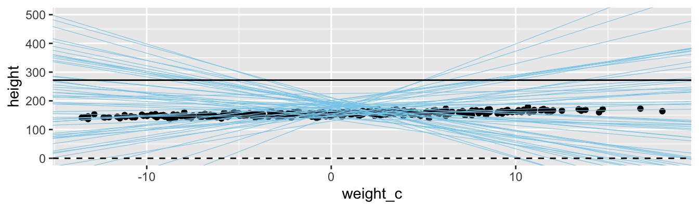
Die durchgezogene horizontale Linie gibt die Größe des größten Menschens, Robert Pershing Wadlow, an.
8.4.5 Ein positiver Wert für \(\beta\) ist plausibler
8.4.5.1 Oh no
Eine Normalverteilung mit viel Streuung:
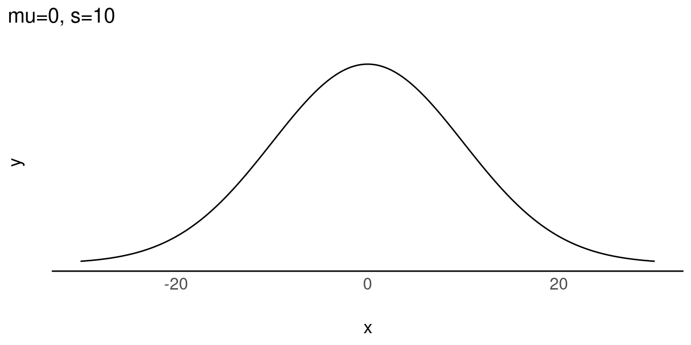
👎 \(\beta=-20\) wäre mit diesem Prior gut möglich: Pro kg Gewicht sind Menschen im Schnitt 20cm kleiner, laut dem Modell. Quatsch.
8.4.5.2 Oh yes
Wir bräuchten eher so eine Verteilung, mit mehr Masse auf der positiven Seite (x>0):
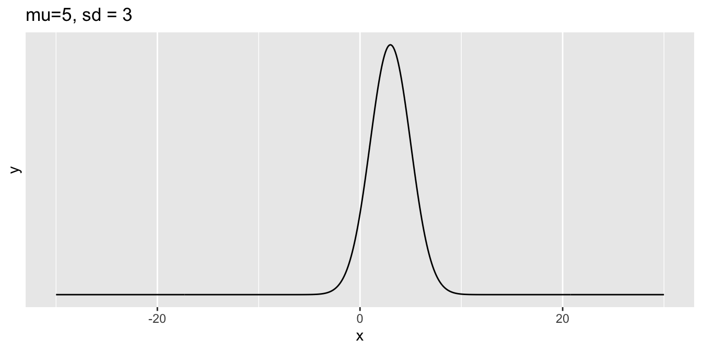
👍 Vermutlich besser: Ein Großteil der Wahrscheinlichkeitsmasse ist \(X>0\). Allerdings gibt’s keine Gewähr, dass unser Prior “richtig” ist.
8.4.6 Priori-Prädiktiv-Simulation, 2. Versuch
m43a_prior_pred <-
stan_glm(
height ~ weight_c,
prior = normal(2, 2), # Regressionsgewicht
prior_intercept = normal(178, 20), # mu
prior_aux = exponential(0.1), # sigma
refresh = FALSE,
# Schalter für Prior-Pred-Verteilung:
prior_PD = TRUE,
data = d3)
m43a_prior_pred_draws <-
m43a_prior_pred %>%
as_tibble() %>%
# Spaltennamen kürzen:
rename(a = `(Intercept)`) %>%
rename(b = weight_c,
s = sigma)| a | b | s |
|---|---|---|
| 199.3 | 3.8 | 1.2 |
| 186.7 | 3.4 | 0.6 |
| 177.5 | 2.9 | 54.9 |
| 176.0 | 1.3 | 0.1 |
| 177.7 | 4.4 | 23.6 |
Das Argument prior_PD = TRUE sorgt dafür, dass keine Posteriori-Verteilung, sondern eine Prior-Prädiktiv-Verteilung berechnet wird.
8.4.7 Visualisieren der Prior-Prädiktiv-Verteilung, m43a
Unsere Priori-Werte scheinen einigermaßen vernünftige Vorhersagen zu tätigen. Allerdings erwartet unser Golem einige Riesen.
d3 %>%
ggplot(aes(x = weight_c, y = height)) +
geom_point() +
geom_abline(data = {m43a_prior_pred_draws %>% slice_head(n=50)},
aes(slope = b,
intercept = a),
color = "skyblue",
size = .2,
alpha = .7) +
geom_hline(yintercept = 272, size = .5) +
geom_hline(yintercept = 0, linetype = "dashed")+
scale_y_continuous(limits = c(0, 500)) 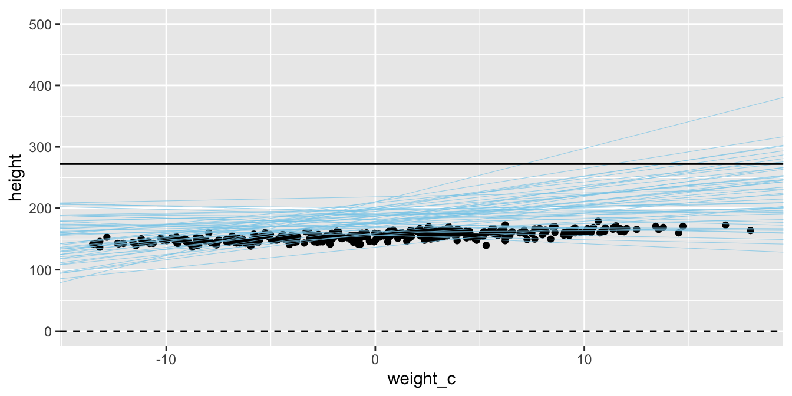
Die durchgezogene horizontale Linie gibt die Größe des größten Menschens, Robert Pershing Wadlow, an.
8.4.8 Moment, kann hier jeder machen, was er will?
Es doch den einen, richtigen, objektiven Priori-Wert geben?!
Kann denn jeder hier machen, was er will?! Wo kommen wir da hin?!
This is a mistake. There is no more a uniquely correct prior than there is a uniquely correct likelihood. Statistical models are machines for inference. Many machines will work, but some work better than others. Priors can be wrong, but only in the same sense that a kind of hammer can be wrong for building a table.
McElreath (2020), p. 96.
8.4.9 Hier ist unser Modell, m43a
\[\begin{align} \text{height}_i &\sim \operatorname{Normal}(\mu_i, \sigma) \\ \mu_i &= \alpha + \beta \cdot \text{weight}_i\\ \alpha &\sim \operatorname{Normal}(178, 20)\\ \beta &\sim \operatorname{Normal}(5,3)\\ \sigma &\sim \operatorname{Exp}(0.1) \end{align}\]
# Posteriori-Vert. berechnen:
m43a <-
stan_glm(
height ~ weight_c, # Regressionsformel
prior = normal(5, 3), # Regressionsgewicht (beta 1)
prior_intercept = normal(178, 20), # mu
prior_aux = exponential(0.1), # sigma
refresh = 0, # zeig mir keine Details
seed = 42, # Zufallszahlen festlegen
data = d3)
8.4.10 Eine Zusammenfassung der Posteriori-Verteilung für m43a
m43a %>%
parameters()| Parameter | Median | 95% CI | pd | Rhat | ESS | Prior |
|---|---|---|---|---|---|---|
| (Intercept) | 154.65 | (154.14, 155.19) | 100% | 0.999 | 3214.00 | Normal (178 +- 20) |
| weight_c | 0.91 | (0.82, 0.99) | 100% | 1.001 | 4134.00 | Normal (5 +- 3) |
Unser Modell m43a schätzt die typische Körpergröße einer !Kung-Person mittleren Gewichts (weight_c = 0) auf knapp 155 cm, und ist sich dieses Werts ziemlich sicher. Pro Kilogramm kommt (laut unserem Modell) ein knapper Zentimeter hinzu, typischerweise; auch hier ist sich das Modell ziemlich sicher, da dass zugehörige 95%-CI keine 20 Zentimenter umfasst.
8.5 Die Post-Verteilung befragen
8.5.1 m43a
Sagen wir, auf Basis gut geprüfter Evidenz haben wir folgendes Modell festgelegt: height ~ weight_c, s. Gleichung 8.1.
Prioris:
\[\beta_1 \sim N(5,3); \\ \beta_0 \sim N(178, 20); \\ \sigma \sim E(0.1) \tag{8.1}\]
Wir nennen das Modell m43a2, s. Listing 8.1.
Listing 8.1: Modelldefinition von m43a in R
m43a <-
stan_glm(
height ~ weight_c, # Regressionsformel
prior = normal(5, 3), # Regressionsgewicht (beta 1)
prior_intercept = normal(178, 20), # mu
prior_aux = exponential(0.1), # sigma
refresh = 0, # zeig mir keine Details
seed = 42, # lege die Zufallszahlen fest für Reproduzierbarkeit
data = d3)Mit seed kann man die Zufallszahlen fixieren, so dass jedes Mal die gleichen Werte resultieren. So ist die Nachprüfbarkeit der Ergebnisse (“Reproduzierbarkeit”) sichergestellt3. Welche Wert für seed man verwendet, ist egal, solange alle den gleichen verwenden. Der Autor verwendet z.B. oft den Wert 42. Zur Erinnerung: Der Golem zieht Zufallszahlen, damit erstellt er Stichproben, die die Postverteilung schätzen.
8.5.2 Mittelwerte von \(\alpha\) und \(\beta\) aus der Post-Verteilung
Die ersten paar Zeilen:
| id | (Intercept) | weight_c | sigma |
|---|---|---|---|
| 1 | 155.1 | 0.9 | 5.0 |
| 2 | 155.5 | 0.8 | 5.1 |
| 3 | 155.5 | 0.9 | 5.1 |
Hier sind die Zusammenfassungen der Stichproben aus der Post-Verteilung, komfortabel zu erhalten mit dem Befehle parameters:
parameters(m43a)| Parameter | Median | 95% CI | pd | Rhat | ESS | Prior |
|---|---|---|---|---|---|---|
| (Intercept) | 154.65 | (154.14, 155.19) | 100% | 0.999 | 3214.00 | Normal (178 +- 20) |
| weight_c | 0.91 | (0.82, 0.99) | 100% | 1.001 | 4134.00 | Normal (5 +- 3) |
Definition 8.1 (Effektwahrscheinlichkeit) Die Kennzahl pd (propability of direction) gibt die Effektwahrscheinlichkeit an: Die Wahrscheinlichkeit, dass der Effekt positiv (also größer als Null) oder negativ ist (je nachdem ob der Median des Effekts positiv oder negativ ist). pd gibt aber nicht an, wie stark der Effekt ist, nur ob er klar auf einer Seite der Null liegt. Damit ist er so etwas (grob!) Ähnliches wie der p-Wert in der Frequentistischen Statistik (Makowski u. a. 2019).
Am besten das Diagramm dazu anschauen, s Abbildung 8.8.
plot(p_direction(m43a))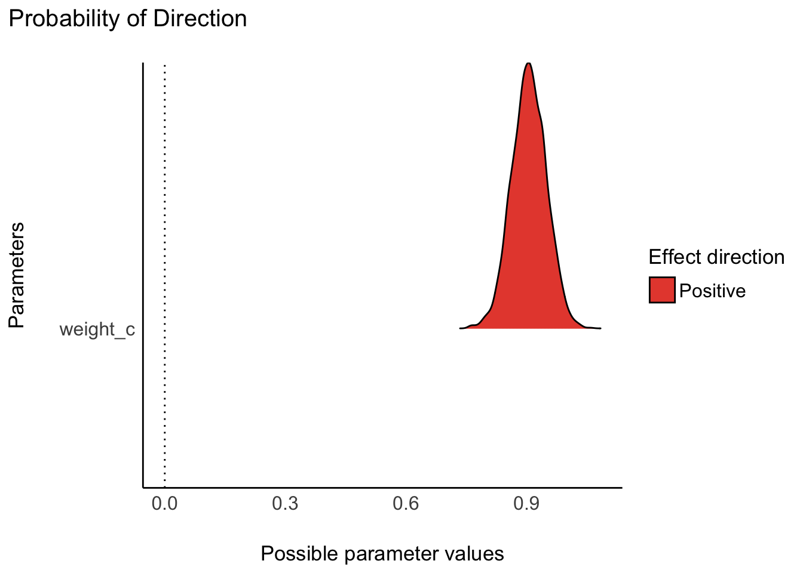
Rhat und ESS sind Kennzahlen, die untersuchen, ob mit der Stichprobenziehung im Bayes-Modell alles gut funktioniert hat. Bei einfachen Modellen (die wir hier berechnen) sollte da in der Regel alles in Ordnung sein. Rhat sollte nicht (viel) größer als 1 oder 1,01 sein. ESS (effective sample size) gibt die Anzahl der effektiv nutzbaren Stichproben an (im Standard werden 4000 berechnet). Die Zahl sollte nicht deutlich geringer sein.
Wir werden uns aber mit diesen beiden Kennwerten nicht weiter beschäftigen in diesem Kurs.
8.5.3 Visualisieren der “mittleren” Regressiongeraden
Zur Erinnerung: Die Bayes-Analyse liefert uns viele Stichproben zu den gesuchten Parametern, hier \(\beta_0\), \(\beta_1\) und \(\sigma\). Überzeugen wir uns mit einem Blick in die Post-Verteilung von m43a:
| (Intercept) | weight_c | sigma |
|---|---|---|
| 155.1421 | 0.8581434 | 5.042898 |
| 155.4658 | 0.8348727 | 5.071101 |
| 155.4522 | 0.8549260 | 5.144382 |
| 155.2342 | 0.8816371 | 5.352756 |
| 155.3172 | 0.8745051 | 5.349856 |
| 154.9315 | 0.9030495 | 5.207581 |
Wir können z.B. ein Lagemaß wie den Median hernehmen, um die “mittlere” Regressionsgerade zu betrachten:
d3 %>%
ggplot() +
aes(x = weight_c, y = height) +
geom_point() +
geom_abline(
slope = 0.9, # Median beta 1
intercept = 154, # Median beta 0
color = "blue")
Einfacher ist die Syntax vielleicht, wenn man die Funktion estimate_expectation benutzt, s. Abbildung 8.9. Mit “expectation” sind hier die erwarteten Werte, also die Regressionsgerade, gemeint.
m43_expect <- estimate_expectation(m43a)
plot(m43_expect)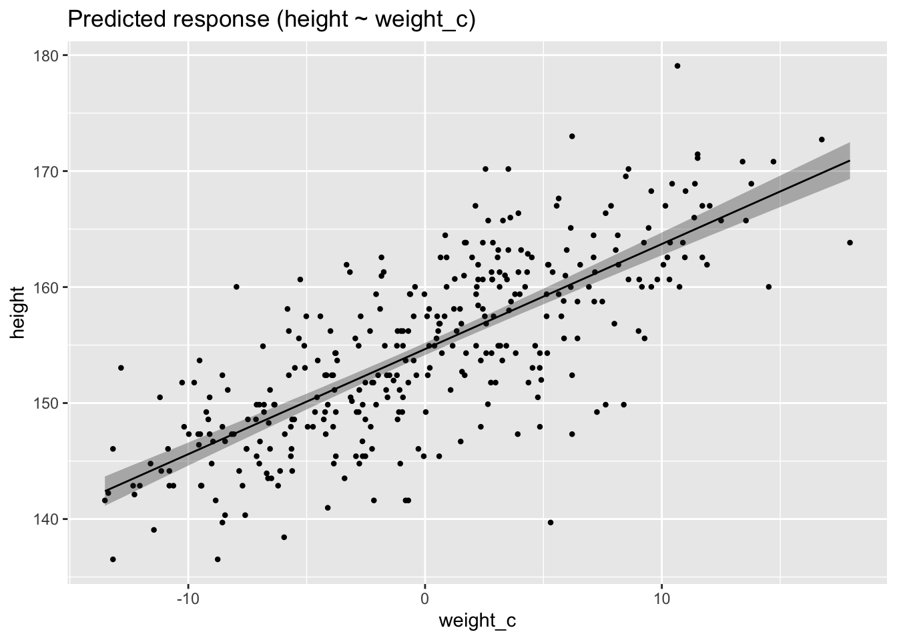
8.5.4 Zentrale Statistiken zu den Parametern
In diesem Modell gibt es drei Parameter: \(\alpha, \beta, \sigma\).
Hier folgen einige Beispiele an Fragen, die wir an unser Modell bzw. die Post-Verteilung stellen können.
8.5.4.1 Lagemaße zu den Parametern
- Was ist die mittlere Größe einer !Kung-Person? (\(\beta_0\))
- Was ist der Schätzwert für den Zusammenhang von Gewicht und Größe? (\(\beta_1\))
- Was ist der Schätzwert für Ungewissheit in der Schätzung der Größe? (\(\sigma\))
- Was ist der wahrscheinlichste Wert für z.B: \(\beta_1\)?
Eine nützliche Zusammenfassung der Post-Verteilung bekommt man mit parameters(modell):
m43a %>%
parameters()| Parameter | Median | 95% CI | pd | Rhat | ESS | Prior |
|---|---|---|---|---|---|---|
| (Intercept) | 154.65 | (154.14, 155.19) | 100% | 0.999 | 3214.00 | Normal (178 +- 20) |
| weight_c | 0.91 | (0.82, 0.99) | 100% | 1.001 | 4134.00 | Normal (5 +- 3) |
Wandelt man das Ausgabe-Objekt der Bayes-Regression, d.h. m43a, mit as_tibble() in eine Tabelle um, so bekommt man eine Tabelle mit den Stichproben der Post-Verteilung:
| (Intercept) | weight_c | sigma |
|---|---|---|
| 155.1421 | 0.8581434 | 5.042898 |
| 155.4658 | 0.8348727 | 5.071101 |
| 155.4522 | 0.8549260 | 5.144382 |
| 155.2342 | 0.8816371 | 5.352756 |
| 155.3172 | 0.8745051 | 5.349856 |
| 154.9315 | 0.9030495 | 5.207581 |
Wie wir gesehen haben, nutzen wir diese Tabelle der Post-Verteilung immer wieder. Speichern wir uns sie also als ein Objekt ab, m43_post.
Jetzt haben wir wieder eine schöne Tabelle mit Stichproben aus der Post-Verteilung, die wir wie gewohnt befragen können.
Eine Visualisierung zeigt gut sowohl Lage- als auch Streuungsmaße der Parameter, zumindest grob.,
Oder man erstellt selber ein Diagramm mit ggplot.
m43a_post %>%
ggplot(aes(x = weight_c)) +
geom_density(fill = "orange")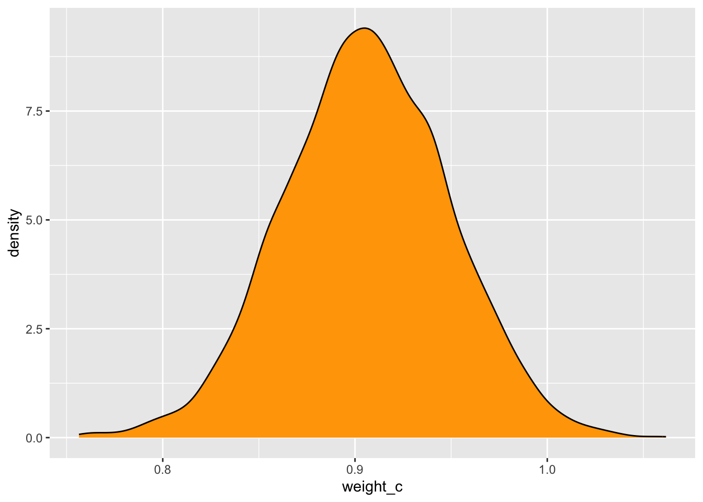
Das Diagramm zeigt, dass Mittelwert, Median und Modus eng zusammenliegen. Zur Erinnerung: Der Modus gibt den häufigsten, d.h. hier also den wahrscheinlichsten, Wert an.
Der Modus wird hier auch Maximum a Posteriori (MAP) genannt, daher:
Hier ist die Verteilung von \(\sigma\) visualisiert, s. Abbildung 8.10.
m43a_post %>%
ggplot(aes(x = sigma)) +
geom_density(fill = "orange")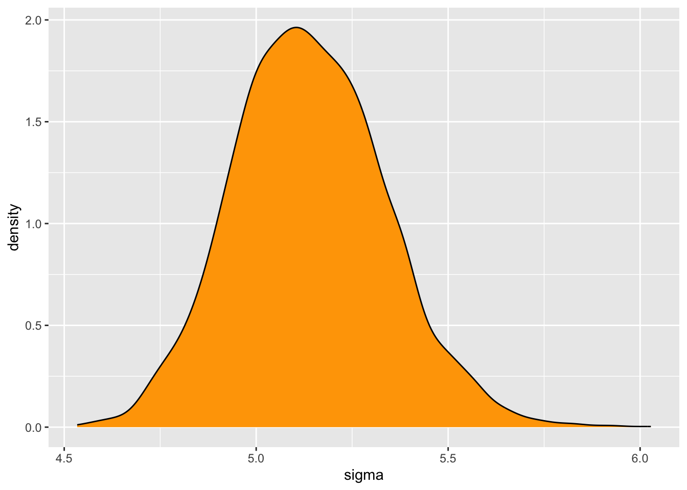
Alternativ kann man sich die Verteilung eines Parameters auch so ausgeben lassen, gleich mit Intervallgrenzen, z.B. 95%, s.@fig-m43a-plot.
m43a_hdi <- hdi(m43a_post) # analog mit eti(m43a)
plot(m43a_hdi)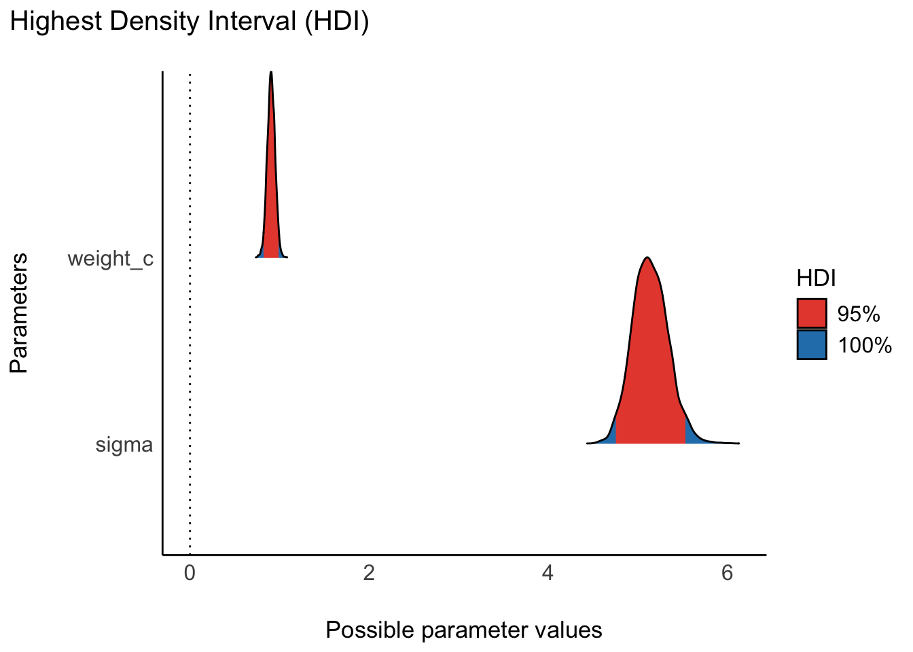
Ergänzt man bei plot() noch show_intercept = TRUE wird auch der Achsenabschnitt angezeigt.
8.5.5 Streuungsmaße zu den Parametern
- Wie unsicher sind wir uns in den Schätzungen der Parameter?
Diese Frage wird durch die Ungewissheitsintervalle in der Ausgabe beantwortet.
An einigen Stellen wird empfohlen, anstelle eines (gebräuchlichen) 95%-Intervalls auf ein 90%- oder 89%-Intervall auszuweichen, aufgrund der besseren numerischen Stabilität.
8.5.6 Ungewissheit von \(\alpha\) und \(\beta\) aus der Post-Verteilung visualisiert
Die ersten 10 Stichproben:
d3 %>%
ggplot(aes(x = weight_c,
y = height)) +
geom_point() +
geom_abline(
data = m43a_post %>%
slice_head(n = 10),
aes(slope = weight_c,
intercept = `(Intercept)`),
alpha = .3)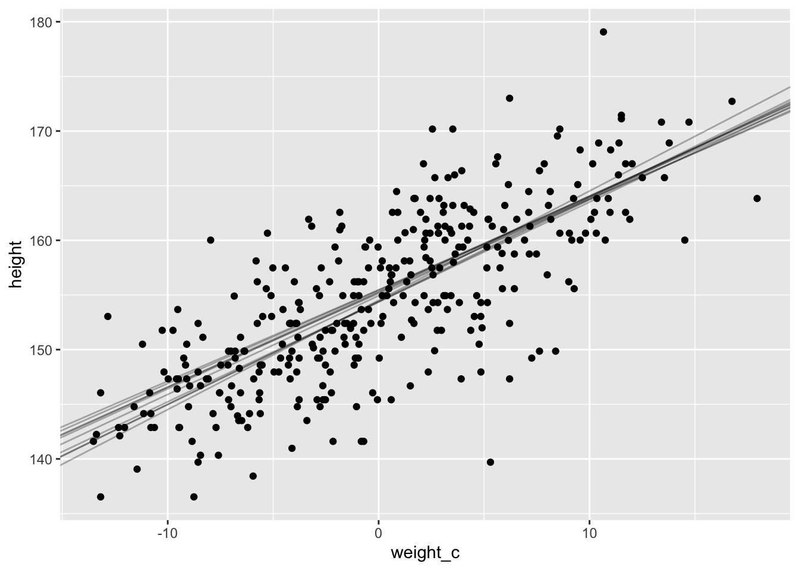
Die ersten 100 Stichproben:
d3 %>%
ggplot(aes(x = weight_c,
y = height)) +
geom_point() +
geom_abline(
data = m43a_post %>%
slice_head(n = 100),
aes(slope = weight_c,
intercept = `(Intercept)`),
alpha = .1)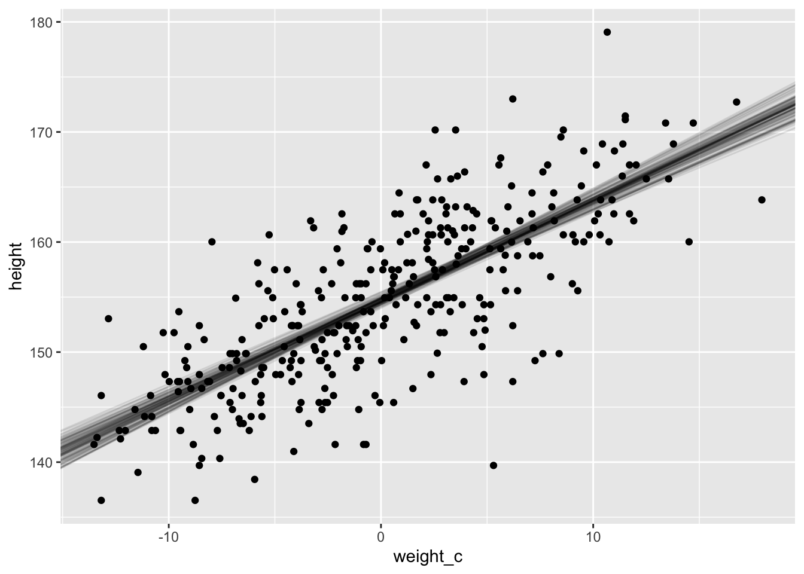
Die ersten 1e3 Stichproben:
d3 %>%
ggplot(aes(x = weight_c,
y = height)) +
geom_point() +
geom_abline(
data = m43a_post %>%
slice_head(n = 1e3),
aes(slope = weight_c,
intercept = `(Intercept)`),
alpha = .01)Die ersten 1000000 … okay, lassen wir es gut sein4.
Einfacher ist die Visualisierung mit estimate_expectation:
8.5.7 Fragen zu Quantilen des Achsenabschnitts
Zur Erinnerung: Bei einem zentrierten Prädiktor misst der Achsenabschnitt die mittlere Größe.
- Welche mittlere Größe wird mit zu 50%, 90% bzw. 95% Wahrscheinlichkeit nicht überschritten?
- Welche mittlere Größe mit zu 95% Wskt. nicht unterschritten?
- Von wo bis wo reicht der innere 50%-Schätzbereich der mittleren Größe?
Quantile:
m43a_post %>%
summarise(
q_50 = quantile(`(Intercept)`, prob = .5),
q_90 = quantile(`(Intercept)`, prob = .9),
q_05 = quantile(`(Intercept)`, prob = .95))| q_50 | q_90 | q_05 |
|---|---|---|
| 154.6548 | 155.0032 | 155.0951 |
50%-PI:
m43a %>%
eti(ci = .5)| Parameter | CI | CI_low | CI_high | Effects | Component |
|---|---|---|---|---|---|
| (Intercept) | 0.5 | 154.4632928 | 154.8373635 | fixed | conditional |
| weight_c | 0.5 | 0.8772824 | 0.9354291 | fixed | conditional |
8.5.8 Fragen zu Wahrscheinlichkeitsmassen des Achsenabschnitts
Wie wahrscheinlich ist es, dass die mittlere Größe bei mind. 155 cm liegt?
| gross | n | prop |
|---|---|---|
| FALSE | 3593 | 0.89825 |
| TRUE | 407 | 0.10175 |
Die Wahrscheinlichkeit beträgt 0.1.
Wie wahrscheinlich ist es, dass die mittlere Größe höchstens 154.5 cm beträgt?
| klein | n | prop |
|---|---|---|
| FALSE | 2833 | 0.70825 |
| TRUE | 1167 | 0.29175 |
Die Wahrscheinlichkeit beträgt 0.29.
‚
8.5.9 Typischer Bayes-Nutzer in Aktion

8.6 Post-Verteilung bedingt auf einen Prädiktorwert
8.6.1 Visualisierung
Was ist wohl die Wahrscheinlichkeit der Körpergröße bei einem bestimmten Gewicht?
Angenommen wir wissen, dass das Gewicht bei, sagen wir 45 kg liegt. Welche Körpergröße ist (im Schnitt) zu erwarten? Wie unsicher sind wir uns über diesen Mittelwert?
Etwas formaler ausgedrückt:
\(\mu|\text{weight}=45\)
45 kg entspricht genau dem Mittelwert von weight. Geht man von zentrierten Prädiktorwerten aus, gilt in dem Fall weight_c = 0. Erstellen wir uns dazu eine Tabelle:
Und plotten diese, s. Abbildung 8.12.
mu_at_45 %>%
ggplot(aes(x = mu_at_45)) +
geom_density()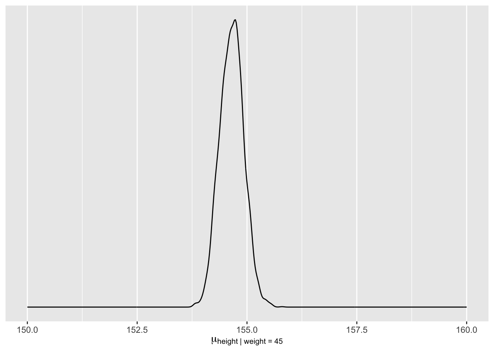
Analog können wir fragen, wie groß wohl eine Person mit 50 kg im Mittelwert sein wird und wie (un)gewiss wir uns über diesen Mittelwert sind.
50 kg, das sind 5 über dem Mittelwert, in zentrierten Einheiten ausgedrückt also weight_c = 5. Auch dazu erstellen wir uns eine Tabelle.
| (Intercept) | weight_c | sigma | mu_at_45 | mu_at_50 |
|---|---|---|---|---|
| 155.1421 | 0.8581434 | 5.042898 | 155.1421 | 159.4329 |
| 155.4658 | 0.8348727 | 5.071101 | 155.4658 | 159.6402 |
| 155.4522 | 0.8549260 | 5.144382 | 155.4522 | 159.7269 |
| 155.2342 | 0.8816371 | 5.352756 | 155.2342 | 159.6424 |
| 155.3172 | 0.8745051 | 5.349856 | 155.3172 | 159.6897 |
| 154.9315 | 0.9030495 | 5.207581 | 154.9315 | 159.4467 |
Die Verteilung der mittleren Größe bei einem Gewicht von 50kg ist weiter “rechts” (Richtung höhere Größe) zentriert, s. Abbildung 8.13.
mu_at_50 %>%
ggplot(aes(x = mu_at_50)) +
geom_density()
8.6.2 Lagemaße und Streuungen
Befragen wir die bedingte Post-Verteilung. Eine erste Frage zielt nach den typischen deskriptiven Statistiken, also nach Lage und Streuung der Verteilung der Körpergröße.
Was ist das 90% PI für \(\mu|w=50\) ?
mu_at_50 %>%
eti(mu_at_50, ci = .9)| Parameter | CI | CI_low | CI_high |
|---|---|---|---|
| (Intercept) | 0.9 | 154.2144131 | 155.0950875 |
| weight_c | 0.9 | 0.8358413 | 0.9763181 |
| sigma | 0.9 | 4.8298399 | 5.4758137 |
| mu_at_45 | 0.9 | 154.2144131 | 155.0950875 |
| mu_at_50 | 0.9 | 158.6294638 | 159.7578370 |
Die mittlere Größe - gegeben \(w=50\) - liegt mit 90% Wahrscheinlichkeit zwischen den beiden Werten (ca.) 159cm und 160cm.
Welche mittlere Größe wird mit 95% Wahrscheinlichkeit nicht überschritten, wenn die Person 45kg wiegt?
8.7 Die PPV befragen
Die Posterior-Prädiktiv-Verteilung (PPV) gibt uns die Möglichkeit, nach der Wahrscheinlichkeit tatsächlicher Körpergrößen zu fragen - und nicht nur nach mittleren Körpergrößen anhand der Post-Verteilung.
Die Post-Verteilung macht nur Aussagen zur mittleren Körpergröße, denn das ist was wir modellieren wollten. Möchten wir Aussagen zur Wahrscheinlichkeit tatsächlicher Größen treffen, brauchen wir die PPV. Allgemeiner gesagt: Die PPV macht Vorhersagen auf Basis eines Modells. Für jede Vorhersage gibt es eine Verteilung, die wir zu einem Punktschätzer (z.B. Median) und einem Schätzbereich (z.B. 89%-HDI) zusammenfassen können.
An dieser Stelle sollten wir uns vor Augen führen, dass die PPV mehr Ungewissheit beinhaltet, denn sie berücksichtigt derer zweier Arten:
- Ungewissheit bzgl. der Modellparameter (Steigung und Achsenabschnitt der Regressionsgeraden)
- Ungewissheit der Vorhersagen (das Modell macht keine perfekten Vorhersagen)
Die Post-Verteilung berücksichtigt nur die Ungewissheit in den Modellparametern, macht also nur Aussagen zur Regressionsgeraden.
Die PPV macht Aussagen für konkrete Beobachtungen. Der Unterschied ist in Abbildung 8.14 dargestellt; die Funktionen stammen übrigens aus easystats.
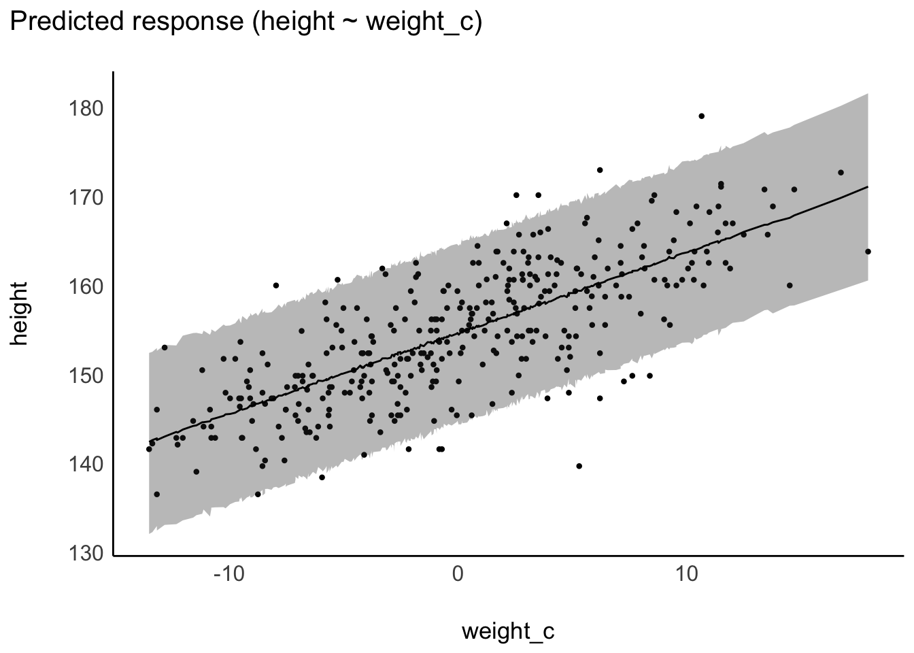
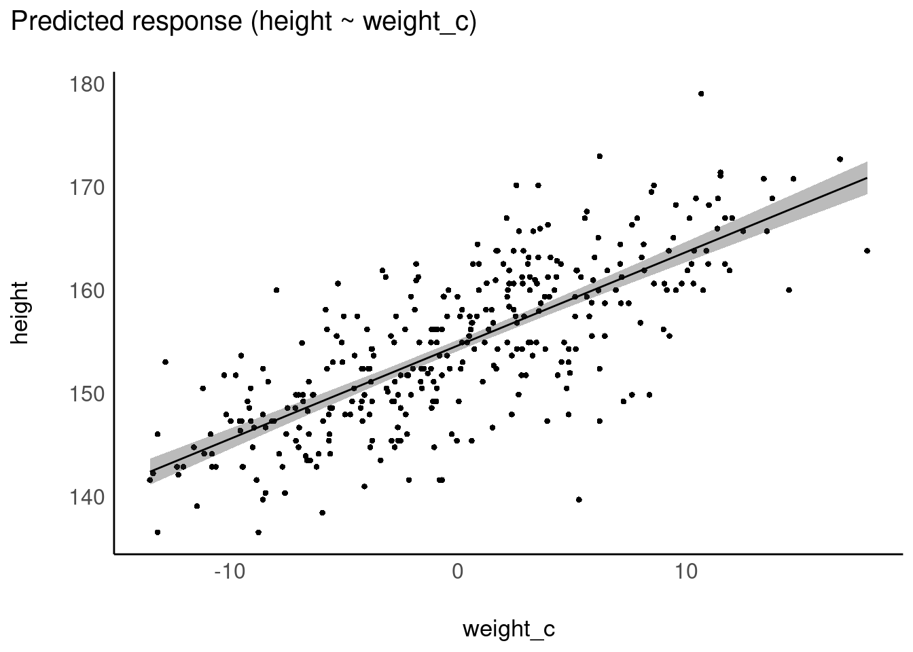
8.7.1 Perzentil-Intervalle für bestimmte Prädiktor-Werte
Wie groß ist ein !Kung-Mann mit mittlerem Gewicht?
| weight_c | Predicted | SE | CI_low | CI_high |
|---|---|---|---|---|
| 0 | 154.5787 | 5.162584 | 144.2798 | 164.5835 |
Unser Modell, ma43a schätzt ca. 145cm bis 165cm.
Wir können uns auch eine Sequenz an Prädiktorwerten, die uns interessieren, erstellen, s. weight_df:
Für diese Werte lassen wir uns dann die Perzentil-Intervalle (PI) ausgeben:
mus <-
estimate_prediction(m43a, data = weight_df)
head(mus)| weight_c | Predicted | SE | CI_low | CI_high |
|---|---|---|---|---|
| -20 | 136.5669 | 5.371291 | 125.8810 | 147.3205 |
| -15 | 141.0826 | 5.250343 | 130.6368 | 151.1919 |
| -10 | 145.7617 | 5.144039 | 135.5270 | 155.5853 |
| -5 | 150.0022 | 5.174693 | 139.5637 | 159.9117 |
| 0 | 154.5556 | 5.178200 | 144.5177 | 164.8595 |
| 5 | 159.2914 | 5.138765 | 149.2243 | 169.2083 |
Um die Perzentilintervalle zu erstellen, wird von estimate_prediction() für jeden Prädiktorwert eine PPV erstellt und (in der Voreinstellung) das 5%- sowie 95%-Quantil dafür berechnet. Sie können die Voreinstellung ändern mittels des Arguments ci; um ein 89%-PI zu berechnen, würde man z.B. schreiben ci = .89.
Um Reproduzierbarkeit sicherzustellen, haben wir mit set.seed(42) die Zufallszahlen fixiert.
Hoppla! Das ist ja viel ungenauer, als die Angaben der Post-Verteilung oben. Ja, denn die Post-Verteilung hat die Ungewissheit zum Mittelwert ausgedrückt; die PPV gibt die Ungewissheit tatsächlicher beobachtbarer Körpergrößen aus, nicht nur die Ungewissheit zum Mittelwert.
Berechnen wir die PPV für die bestehenden Beobachtungen aus m43a:
ppv_m43a <- estimate_prediction(
m43a,
data = weight_df)
mus | weight_c | Predicted | SE | CI_low | CI_high |
|---|---|---|---|---|
| -20 | 136.5669 | 5.371291 | 125.8810 | 147.3205 |
| -15 | 141.0826 | 5.250343 | 130.6368 | 151.1919 |
| -10 | 145.7617 | 5.144039 | 135.5270 | 155.5853 |
| -5 | 150.0022 | 5.174693 | 139.5637 | 159.9117 |
| 0 | 154.5556 | 5.178200 | 144.5177 | 164.8595 |
| 5 | 159.2914 | 5.138765 | 149.2243 | 169.2083 |
| 10 | 163.6660 | 5.220188 | 153.4377 | 174.0912 |
| 15 | 168.2456 | 5.249081 | 158.2699 | 178.4302 |
| 20 | 172.7290 | 5.322229 | 162.4394 | 183.2873 |
8.7.2 Perzentilintervalle für verschiedenen Prädiktorwerte visualisiert
Abbildung 8.15 visualisiert die Ungewissheit von Vorhersagen laut der PPV. Die Ungewissheit in Abbildung 8.15 ist die Antwort auf die Frage: “Wie sicher sind wir uns, zur Größe einer !Kung-Person, gegeben dass die z.B. 10 kg mehr als der Durchschnitt wiegt?” Eine Vorhersage bezeichnet man auch als “bedingte Verteilung”, da man den Wert einer Verteilung voraussagt, gegeben einer Bedingung, z.B. weight_c = 10.
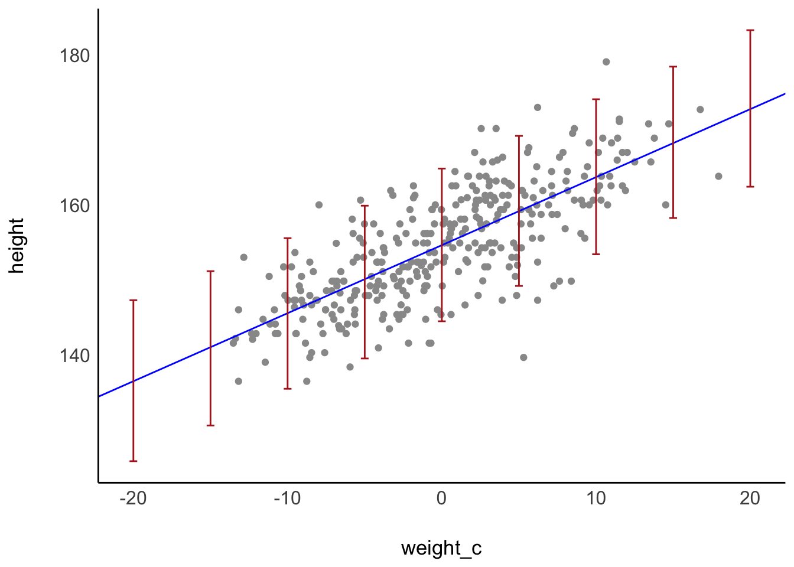
Die vertikalen Balken geben die 95%-KI wieder, die wir jeweils zu erwarten haben.
Noch eine andere Visualisierung, s. Abbildung 8.16; je dicker die “Katzenaugen”, desto mehr Stichproben (samples) liegen vor an der Stelle, und umso genauer ist die Schätzung.
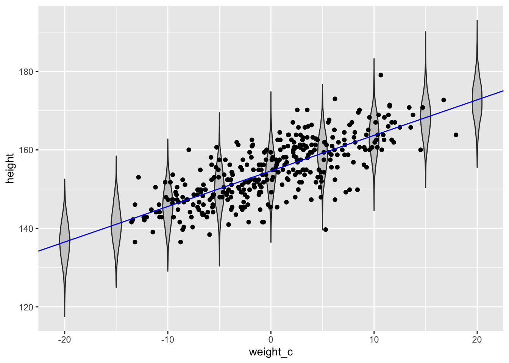
Also: Je dicker die Violine, desto wahrscheinlicher \(\mu | w_i\).
8.7.3 Die PPV über alle Beobachtungen visualisiert
Gerade eben haben wir bedingte PPVen angeschaut: Also eine PPV für einen bestimmten Prädiktorwert, z.B. bei einer Person mittleren Gewichts. Wir können auch den Mittelwert über alle bedingten PPV anschauen, sozusagen die “Master-PPV” oder “unbedingte PPV” oder schlicht PPV. Vergleichen wir die echten Werte für height, \(y\), mit den von der PPV simulierten Werten für height, \(y_{rep}\), s. Abbildung 8.17.
check_predictions(m43a) # aus easystatss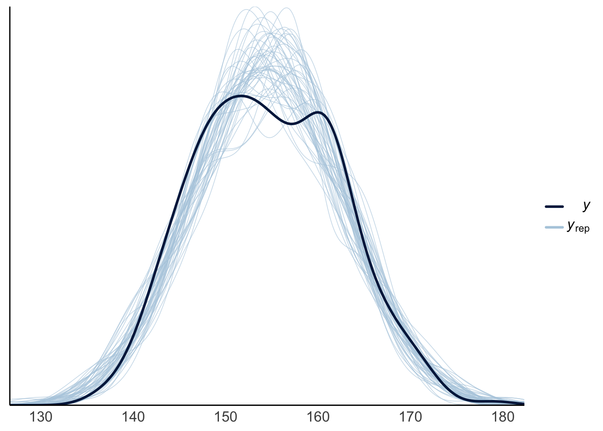
?check_predictions zeigt Hilfe für diese Funktion. Die Funktion zeigt die Vorhersagen für die AV laut der Posteriori-Verteilung.
Die zwei Gipfel hat unser Modell nicht mitgekriegt, ansonsten decken sich die Vorhersagen der PPV gut mit den echten Daten.
8.7.4 Fragen an die Master-PPV
- Wie groß sind die !Kung im Schnitt?
- Welche Größe wird von 90% der Personen nicht überschritten?
- Wie groß sind die 10% kleinsten?
ppv_m43a <- posterior_predict(
m43a,
newdata = weight_df,
draws = 100) %>%
as_tibble() %>%
pivot_longer(
cols = everything(),
names_to = "weight_condition",
values_to = "height")
head(ppv_m43a)| weight_condition | height |
|---|---|
| 1 | 132.5265 |
| 2 | 136.7188 |
| 3 | 147.7576 |
| 4 | 143.1540 |
| 5 | 156.0412 |
| 6 | 157.4500 |
ppv_m43a <-
ppv_m43a <- posterior_predict(
m43a,
newdata = weight_df,
draws = 100) %>%
as_tibble() %>%
pivot_longer(
cols = everything(),
names_to = "weight_condition",
values_to = "height")
head(ppv_m43a)| weight_condition | height |
|---|---|
| 1 | 144.0829 |
| 2 | 144.6354 |
| 3 | 141.7168 |
| 4 | 153.3734 |
| 5 | 153.9631 |
| 6 | 157.1561 |
ppv_m43a %>%
summarise(
q_10 = quantile(height, prob = .1),
height_mean = mean(height),
q_50 = quantile(height, prob = .5),
q_90 = quantile(height, prob = .9)
)| q_10 | height_mean | q_50 | q_90 |
|---|---|---|---|
| 137.6442 | 154.7309 | 154.7682 | 171.8652 |
Was ist der 50% Bereich der Körpergröße?
ppv_m43a %>%
eti(ci = .5)| Parameter | CI | CI_low | CI_high |
|---|---|---|---|
| height | 0.5 | 144.9652 | 165.2586 |
8.8 Aufgaben
8.9 —

Da es viele Funktionen sind, bietet es sich an mit Strg-F auf der Webseite nach Ihrem Lieblingsbefehl zu suchen.↩︎
Wer ist hier für die Namensgebung zuständig? Besoffen oder was?↩︎
oder zumindest besser sichergestellt↩︎
Im Standard beschert uns
stan_glm()4000 Stichproben.↩︎